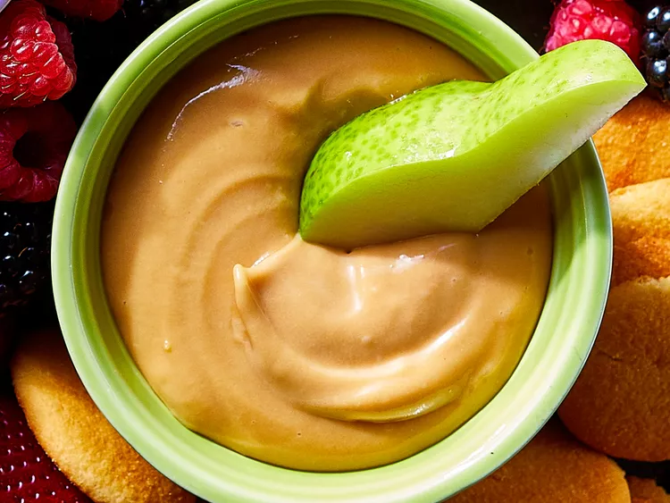

Back
Caramel Apple Dip

Description
This is a delicious caramel apple dip that's easy to make with your favorite
caramels and just 3 other ingredients. Sprinkle with nuts before serving for a
tasty treat.
Ingredients
- 16 individually wrapped caramels, unwrapped
- ¼ cup water
- 1 (8 ounce) package cream cheese
- ½ cup brown sugar
Steps
- Melt caramels with water in a medium saucepan over medium-low heat or in the
microwave, stirring frequently. Remove from heat and cool to room
temperature.
- Beat cream cheese and sugar together in a medium bowl until fluffy; fold in
caramel mixture. Serve immediately.